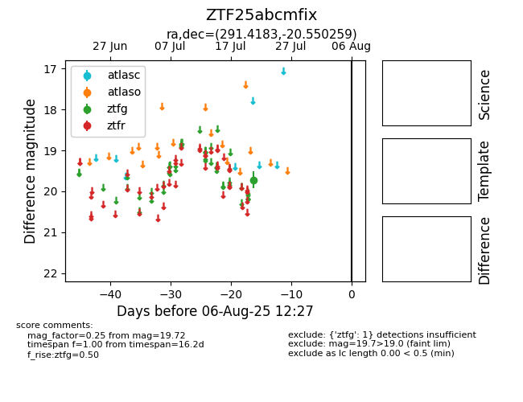

Target ZTF25abcmfix at 2025-08-06 17:07, see:
FINK: fink-portal.org/ZTF25abcmfix
Lasair: lasair-ztf.lsst.ac.uk/objects/ZTF25abcmfix
ALeRCE: alerce.online/object/ZTF25abcmfix
alt names
ZTF25abcmfix (ztf,fink)
coordinates:
equatorial (ra, dec) = (291.4183,-20.55026)
galactic (l, b) = (17.8878,-16.50425)
photometry
last ztfg=19.72
1 ztfg detections
